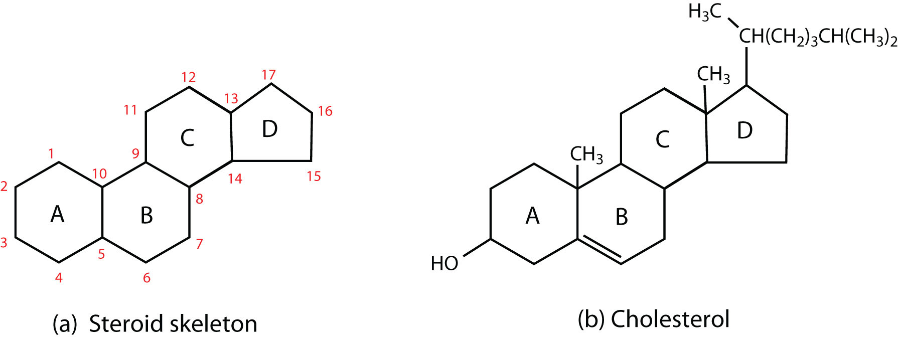
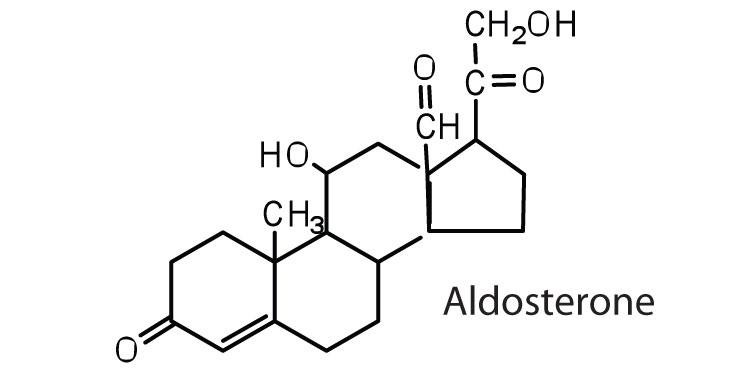
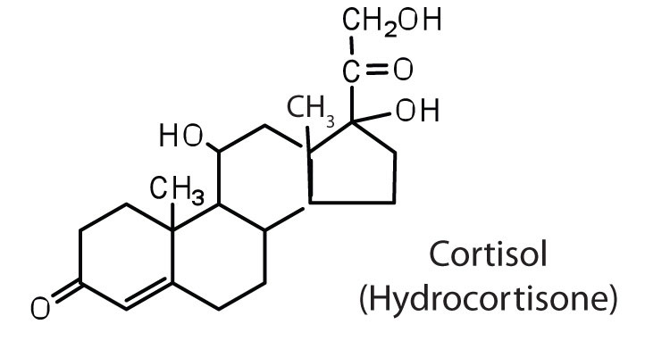
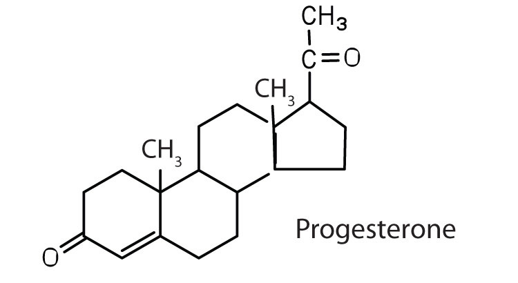
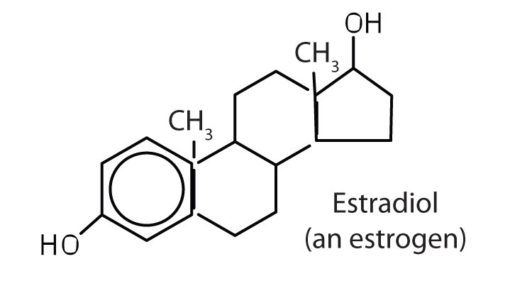
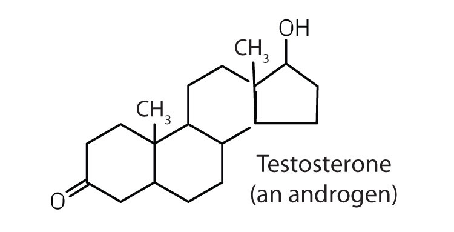
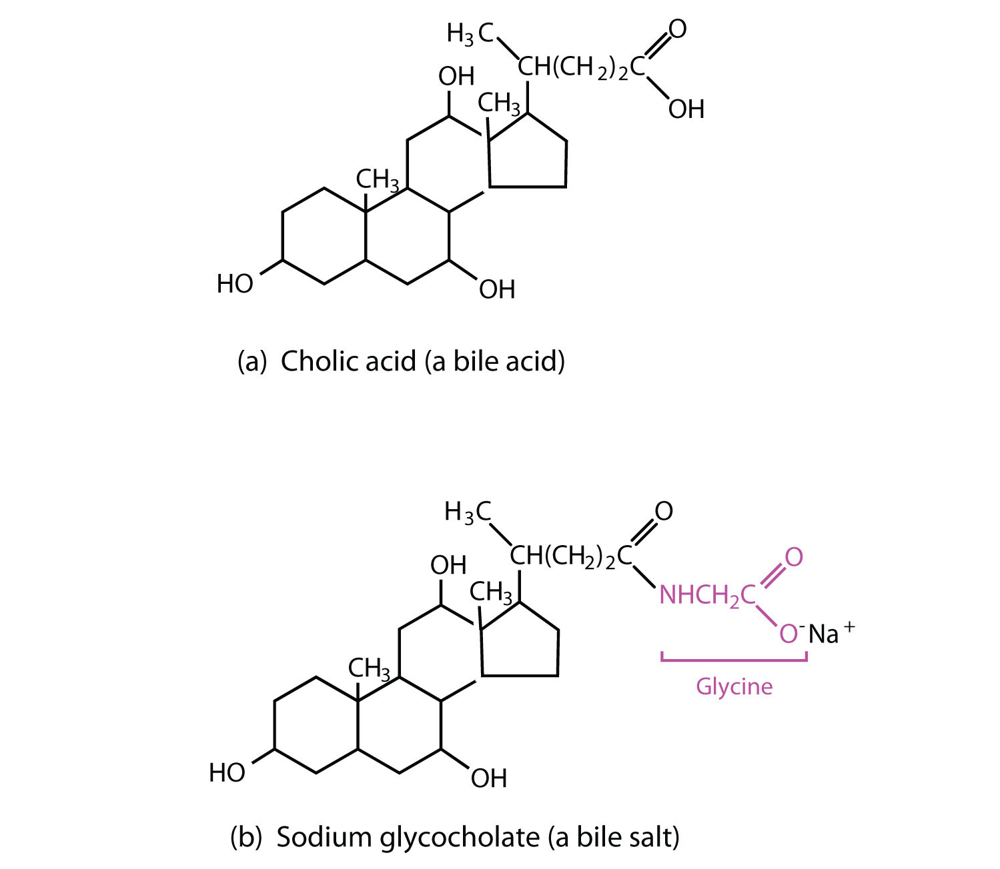

All the lipids discussed so far are saponifiable, reacting with aqueous alkali to yield simpler components, such as glycerol, fatty acids, amino alcohols, and sugars. (For more information about saponification, see Section 17.2 "Fats and Oils".) Lipid samples extracted from cellular material, however, also contain a small but important fraction that does not react with alkali. The most important nonsaponifiable lipids are the steroidsA lipid with a four-fused-ring structure.. These compounds include the bile salts, cholesterol and related compounds, and certain hormones (such as cortisone and the sex hormones).
Figure 17.11 Steroids
(a) The four-fused-ring steroid skeleton uses letter designations for each ring and the numbering of the carbon atoms. (b) The cholesterol molecule follows this pattern.
Steroids occur in plants, animals, yeasts, and molds but not in bacteria. They may exist in free form or combined with fatty acids or carbohydrates. All steroids have a characteristic structural component consisting of four fused rings. Chemists identify the rings by capital letters and number the carbon atoms as shown in part (a) of Figure 17.11 "Steroids". Slight variations in this structure or in the atoms or groups attached to it produce profound differences in biological activity.
CholesterolA steroid that is found in mammals. (part (b) of Figure 17.11 "Steroids") does not occur in plants, but it is the most abundant steroid in the human body (240 g is a typical amount). Excess cholesterol is believed to be a primary factor in the development of atherosclerosis and heart disease, which are major health problems in the United States today. About half of the body’s cholesterol is interspersed in the lipid bilayer of cell membranes (Figure 17.6 "Schematic Diagram of a Cell Membrane"). Much of the rest is converted to cholic acid, which is used in the formation of bile salts. Cholesterol is also a precursor in the synthesis of sex hormones, adrenal hormones, and vitamin D. Excess cholesterol not metabolized by the body is released from the liver and transported by the blood to the gallbladder. Normally, it stays in solution there until being secreted into the intestine (as a component of bile) to be eliminated. Sometimes, however, cholesterol in the gallbladder precipitates in the form of gallstones. Indeed, the name cholesterol is derived from the Greek chole, meaning “bile,” and stereos, meaning “solid.”
Heart disease is the leading cause of death in the United States for both men and women. The Centers for Disease Control and Prevention reported that heart disease claimed 631,636 lives in the United States (26% of all reported deaths) in 2006.
Scientists agree that elevated cholesterol levels in the blood, as well as high blood pressure, obesity, diabetes, and cigarette smoking, are associated with an increased risk of heart disease. A long-term investigation by the National Institutes of Health showed that among men ages 30 to 49, the incidence of heart disease was five times greater for those whose cholesterol levels were above 260 mg/100 mL of serum than for those with cholesterol levels of 200 mg/100 mL or less. The cholesterol content of blood varies considerably with age, diet, and sex. Young adults average about 170 mg of cholesterol per 100 mL of blood, whereas males at age 55 may have cholesterol levels at 250 mg/100 mL or higher because the rate of cholesterol breakdown decreases with age. Females tend to have lower blood cholesterol levels than males.
To understand the link between heart disease and cholesterol levels, it is important to understand how cholesterol and other lipids are transported in the body. Lipids, such as cholesterol, are not soluble in water and therefore cannot be transported in the blood (an aqueous medium) unless they are complexed with proteins that are soluble in water, forming assemblages called lipoproteins. Lipoproteins are classified according to their density, which is dependent on the relative amounts of protein and lipid they contain. Lipids are less dense than proteins, so lipoproteins containing a greater proportion of lipid are less dense than those containing a greater proportion of protein.
Research on cholesterol and its role in heart disease has focused on serum levels of low-density lipoproteins (LDLs) and high-density lipoproteins (HDLs). One of the most fascinating discoveries is that high levels of HDLs reduce a person’s risk of developing heart disease, whereas high levels of LDLs increase that risk. Thus the serum LDL:HDL ratio is a better predictor of heart disease risk than the overall level of serum cholesterol. Persons who, because of hereditary or dietary factors, have high LDL:HDL ratios in their blood have a higher incidence of heart disease.
How do HDLs reduce the risk of developing heart disease? No one knows for sure, but one role of HDLs appears to be the transport of excess cholesterol to the liver, where it can be metabolized. Therefore, HDLs aid in removing cholesterol from blood and from the smooth muscle cells of the arterial wall.
Dietary modifications and increased physical activity can help lower total cholesterol and improve the LDL:HDL ratio. The average American consumes about 600 mg of cholesterol from animal products each day and also synthesizes approximately 1 g of cholesterol each day, mostly in the liver. The amount of cholesterol synthesized is controlled by the cholesterol level in the blood; when the blood cholesterol level exceeds 150 mg/100 mL, the rate of cholesterol biosynthesis is halved. Hence, if cholesterol is present in the diet, a feedback mechanism suppresses its synthesis in the liver. However, the ratio of suppression is not a 1:1 ratio; the reduction in biosynthesis does not equal the amount of cholesterol ingested. Thus, dietary substitutions of unsaturated fat for saturated fat, as well as a reduction in consumption of trans fatty acids, is recommended to help lower serum cholesterol and the risk of heart disease.
Hormones are chemical messengers that are released in one tissue and transported through the circulatory system to one or more other tissues. One group of hormones is known as steroid hormones because these hormones are synthesized from cholesterol, which is also a steroid. There are two main groups of steroid hormones: adrenocortical hormones and sex hormones.
The adrenocortical hormones, such as aldosterone and cortisol (Table 17.3 "Representative Steroid Hormones and Their Physiological Effects"), are produced by the adrenal gland, which is located adjacent to each kidney. Aldosterone acts on most cells in the body, but it is particularly effective at enhancing the rate of reabsorption of sodium ions in the kidney tubules and increasing the secretion of potassium ions and/or hydrogen ions by the tubules. Because the concentration of sodium ions is the major factor influencing water retention in tissues, aldosterone promotes water retention and reduces urine output. Cortisol regulates several key metabolic reactions (for example, increasing glucose production and mobilizing fatty acids and amino acids). It also inhibits the inflammatory response of tissue to injury or stress. Cortisol and its analogs are therefore used pharmacologically as immunosuppressants after transplant operations and in the treatment of severe skin allergies and autoimmune diseases, such as rheumatoid arthritis.
Table 17.3 Representative Steroid Hormones and Their Physiological Effects
| Hormone | Effect |
|---|---|
|

|
regulates salt metabolism; stimulates kidneys to retain sodium and excrete potassium |
|

|
stimulates the conversion of proteins to carbohydrates |
|

|
regulates the menstrual cycle; maintains pregnancy |
|

|
stimulates female sex characteristics; regulates changes during the menstrual cycle |
|

|
stimulates and maintains male sex characteristics |
The sex hormones are a class of steroid hormones secreted by the gonads (ovaries or testes), the placenta, and the adrenal glands. Testosterone and androstenedione are the primary male sex hormones, or androgens, controlling the primary sexual characteristics of males, or the development of the male genital organs and the continuous production of sperm. Androgens are also responsible for the development of secondary male characteristics, such as facial hair, deep voice, and muscle strength. Two kinds of sex hormones are of particular importance in females: progesterone, which prepares the uterus for pregnancy and prevents the further release of eggs from the ovaries during pregnancy, and the estrogens, which are mainly responsible for the development of female secondary sexual characteristics, such as breast development and increased deposition of fat tissue in the breasts, the buttocks, and the thighs. Both males and females produce androgens and estrogens, differing in the amounts of secreted hormones rather than in the presence or absence of one or the other.
Sex hormones, both natural and synthetic, are sometimes used therapeutically. For example, a woman who has had her ovaries removed may be given female hormones to compensate. Some of the earliest chemical compounds employed in cancer chemotherapy were sex hormones. For example, estrogens are one treatment option for prostate cancer because they block the release and activity of testosterone. Testosterone enhances prostate cancer growth. Sex hormones are also administered in preparation for sex-change operations, to promote the development of the proper secondary sexual characteristics. Oral contraceptives are synthetic derivatives of the female sex hormones; they work by preventing ovulation.
BileThe yellowish green liquid produced in the liver. is a yellowish green liquid (pH 7.8–8.6) produced in the liver. The most important constituents of bile are bile salts, which are sodium salts of amidelike combinations of bile acids, such as cholic acid (part (a) of Figure 17.12 "Bile Acids") and an amine such as the amino acid glycine (part (b) of Figure 17.12 "Bile Acids"). They are synthesized from cholesterol in the liver, stored in the gallbladder, and then secreted in bile into the small intestine. In the gallbladder, the composition of bile gradually changes as water is absorbed and the other components become more concentrated.
Figure 17.12 Bile Acids
(a) Cholic acid is an example of a bile acid. (b) Sodium glycocholate is a bile salt synthesized from cholic acid and glycine.
Because they contain both hydrophobic and hydrophilic groups, bile salts are highly effective detergents and emulsifying agents; they break down large fat globules into smaller ones and keep those smaller globules suspended in the aqueous digestive environment. Enzymes can then hydrolyze fat molecules more efficiently. Thus, the major function of bile salts is to aid in the digestion of dietary lipids.
Surgical removal is often advised for a gallbladder that becomes infected, inflamed, or perforated. This surgery does not seriously affect digestion because bile is still produced by the liver, but the liver’s bile is more dilute and its secretion into the small intestine is not as closely tied to the arrival of food.
Distinguish between a saponifiable lipid and a nonsaponifiable lipid.
Identify a key function for each steroid.
A saponifiable lipid reacts with aqueous alkali to yield simpler components, while a nonsaponifiable lipid does not react with alkali to yield simpler components.
Which of these compounds are steroids—tripalmitin, cephalin, or cholesterol?
Which of these compounds are steroids—vitamin D, cholic acid, or lecithin?
Draw the basic steroid skeleton and label each ring with the appropriate letter designation.
Identify each compound as an adrenocortical hormone, a female sex hormone, or a male sex hormone.
cholesterol